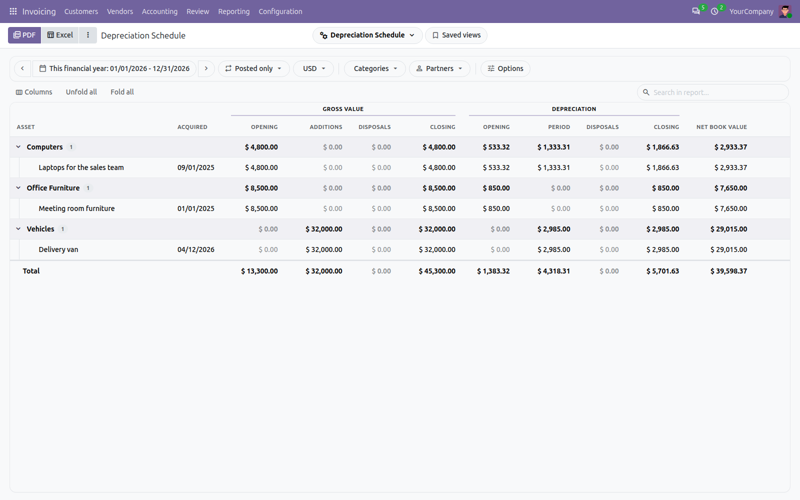
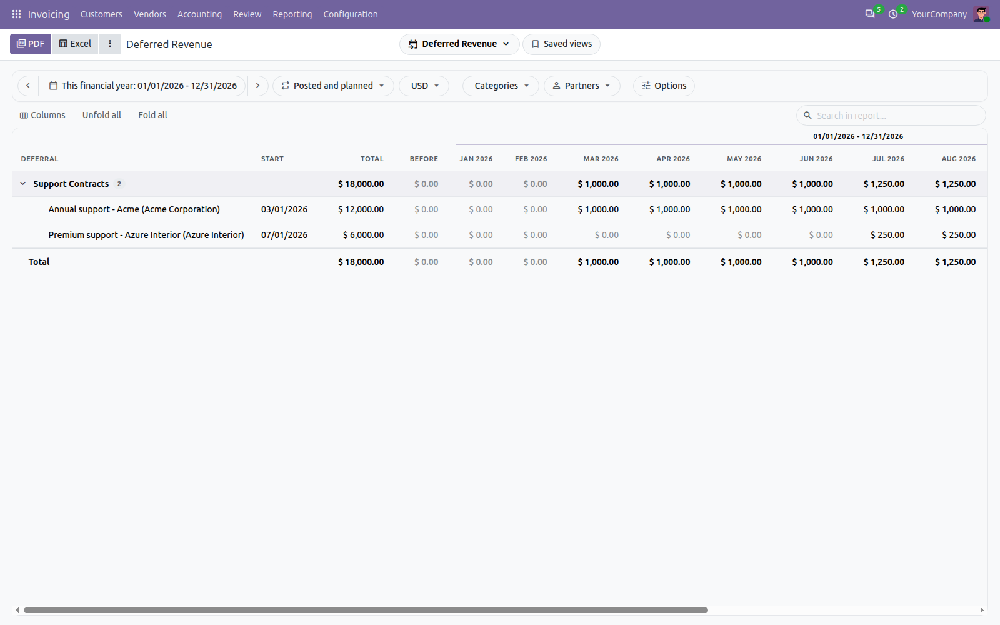

Odoo Mates · free and open source
Assets and Deferrals
The Depreciation Schedule of your fixed assets and the recognition schedules of your deferrals, in the Dynamic Accounting Reports.
Depreciation ScheduleDeferred RevenueDeferred ExpenseDrill to the entriesFree, LGPL-3
Installs by itself with Dynamic Accounting Reports and Assets Management.
Depreciation Schedule
Gross value, accumulated depreciation and net book value of every fixed asset: opening, additions, disposals, closing.
Deferred Revenue
The revenue recognitions of Assets Management (categories of type Sale).
Deferred Expense
The prepaid expenses: purchase categories on a prepayment or current asset account; the fixed assets stay out.
Months, Quarters, Years
A column per month of the period, quarters or years for long ones.
Drill-down
A figure opens its recognition entries, a deferral opens itself.
Depreciation Schedule
Every fixed asset with its gross value, depreciation and net book value over the period, by category.

Deferred Revenue
Support contracts recognized month by month, by category.
